Tema 8: Restauración y copias de seguridad
Programación y Administración de Sistemas
(2023-2024)
1 Objetivos y evaluación
Objetivos
- Justificar la necesidad de establecer planes de prevención de catástrofes en la administración de cualquier sistema informático.
- Identificar distintos escenarios en los que pueda perderse información y establecer medidas de prevención: errores humanos, virus y software destructivo, personas malintencionadas y fallos del hardware.
- Proporcionar una serie de consejos generales a la hora de planear las copias de seguridad de un sistema.
- Establecer los factores que determinan la forma en que se realizan las copias de seguridad.
- Diferenciar los tres *tipos de estrategias** a seguir a la hora de realizar copias de seguridad: completa, parcial e incremental.
- Identificar diferentes soportes hardware en los que realizar las copias de seguridad.
- Utilizar la herramienta
tarpara realizar copias de seguridad en un sistema GNU/Linux. - Utilizar la herramienta
dumppara realizar copias de seguridad en un sistema GNU/Linux yrestorepara restaurarlas. - Utilizar la herramienta
cpiopara realizar copias de seguridad en un sistema GNU/Linux.
Evaluación
Cuestionarios objetivos.
Pruebas de respuesta libre.
Tareas de administración.
NOTA: Como en otros temas, aquí veremos muchos parámetros de configuración que no tiene sentido memorizar, pero si hay que saber qué posibilidades tenemos en la administración de sistemas de ficheros.
2 Planes de prevención de catástrofes
31 de marzo, día mundial del backup
qué, dónde, cómo y cuándo
En cualquier momento, algunos archivos serán totalmente ilegibles por algún motivo: se exige capacidad de recuperación.
Las copias de seguridad dependen de la situación y es necesario determinar: qué, dónde, cómo y cuándo...
El administrador/a del sistema debe:
Planear e implementar un sistema de copias de seguridad.
Periódicamente, hacer copias de seguridad de los ficheros.
Guardar las copias de seguridad en un lugar seguro.
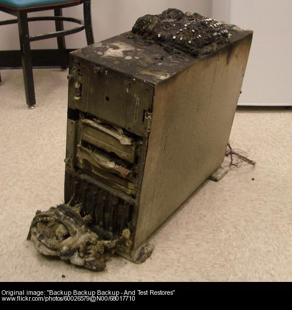
Planes de prevención de catástrofes
La estrategia de copias de seguridad tiene que ser efectiva, para conseguir seguridad:
El tiempo empleado es un esfuerzo que prevé futuras pérdidas.
El dinero gastado se compensa al evitar el desastre que supone una pérdida de datos (que conlleva enormes pérdidas de trabajo y, por tanto, dinero).
Tener en cuenta:
Capacidad restaurar el sistema entero o parte del mismo, en un tiempo aceptable.
Tiempo que tarda en hacerse la copia de seguridad.
Facilidad de recuperar algún fichero de forma independiente.
Si valoramos los costes, merece la pena incluir mecanismos/dispositivos específicos para esta labor.
Escenarios de pérdida de información
Causas:
Errores de usuario.
Virus y software destructivo.
Personas malintencionadas.
Fallos mecánicos.
Fuerzas mayores: desastres naturales, electricidad estática...
Errores humanos
Comandos mal escritos:
$ rm foo *Errores durante el redireccionamiento y uso de tuberías:
$ cat fstab | sed 's/ext2/ext3' > fstabUsuarios con acceso de root:
- Los errores anteriores serían catastróficos si ocurrieran sobre directorios o archivos de sistema.
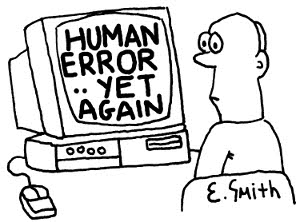
Prevención de errores humanos
Medidas de prevención sencillas:
Utilizar alias:
alias rm='rm -i' # El -i fuerza confirmacionUtilizar sistema de control de versiones (Git...):
Conservan el archivo original y llevan un histórico de los cambios realizados sobre éste.
Crear copias de seguridad personales.
Utilizar
sudopara limitar el acceso de los usuarios con privilegios deroot:Se limitará el acceso únicamente a los comandos necesarios para que el usuario pueda llevar a cabo su tarea.
Malware o programas maliciosos
(Más en https://es.wikipedia.org/wiki/Malware)
Virus: programa que se adhiere a un ejecutable y se propaga a otros al mismo tiempo que realiza otra acción (desde escribir un mensaje hasta mezclar las tablas de particiones).
Un ransomware (del inglés ransom, ‘rescate’, y ware, acortamiento de software) o ‘secuestro de datos’ en español, es un tipo de programa dañino que restringe el acceso a determinadas partes o archivos del sistema operativo infectado y pide un rescate a cambio de quitar esta restricción.
Caballos de Troya: Programas que se hacen pasar por otros, funcionando como éstos, pero además realizando otras operaciones como obtener y enviar contraseñas. El grado de destrucción depende de quien los ejecuta.
Gusanos: Programas que se aprovechan de las debilidades de un sistema para propagarse a otros.
Software destructivo: Aplicaciones no mal intencionadas pero con errores de programación que pueden ser muy dañinos.
Linux dispone de mecanismos de seguridad que dificultan su propagación (jerarquía usuarios, protección de la memoria, límite de procesos, etc.).
Software destructivo: prevención
Medidas de prevención sencillas:
Software específico de búsqueda y destrucción de virus (antivirus).
Configuración del entorno: p.ej. la variable PATH no incluye la carpeta actual:
$ echo $PATH
/usr/local/bin:/usr/bin:/bin:/usr/local/games:/usr/gamesDirectrices en
/etc/security/Host y redes víctimas:
Se usan ciertos equipos y redes para probar software (sandbox) nuevo o descubrir nuevos tipos de ataques asumiendo que puede resultar dañado (honeypots y honeynets).
Se suelen basar en un sistema de detección de intrusos (IDS) que genera reglas para el firewall separando el tráfico normal del anómalo (complementario a reglas explícitas del cortafuegos y antivirus).
Honeypots
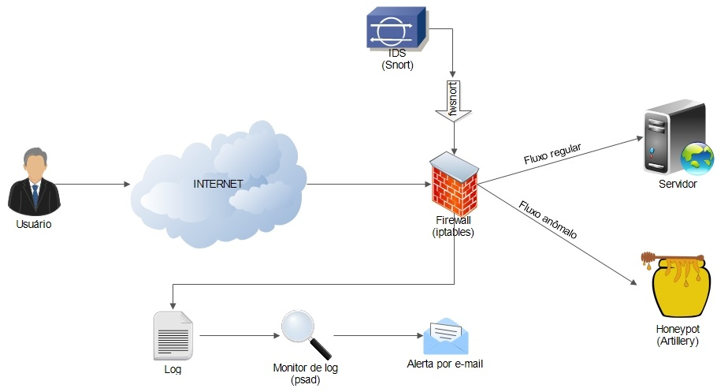
Personas malintencionadas
Crackers (\(\neq\) Hackers): Personas que entran en los sistemas de forma, a veces, ilegal con fines malintencionados.
Usuarios descontentos: Usuario con acceso al sistema y recelo (algunas historias en la página de Logic Bombs).
Medidas preventivas:
Cortafuegos y Seguridad Física para los crackers.
Seguimiento de personas sospechosas de ser “usuarios descontentos” controlando sus accesos y sus privilegios.
Usuarios
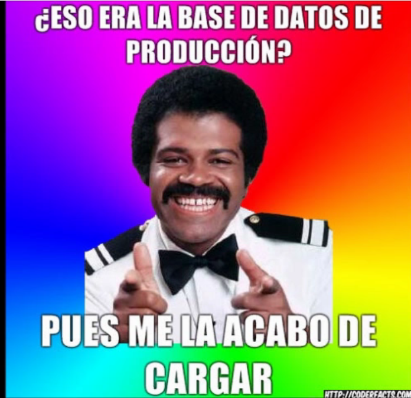
El usuario puede destruir información de forma no intencionada (Vídeo No te olvides de poner el Where en el Delete From)
Fallos de hardware (I)
Fallo en la unidad de disco duro:
- El kernel suele avisar antes de un fallo completo.
Fallo de la memoria:
- Pérdida de información por la caída del sistema o información corrupta en memoria es copiada a disco.
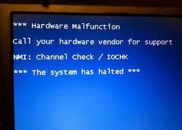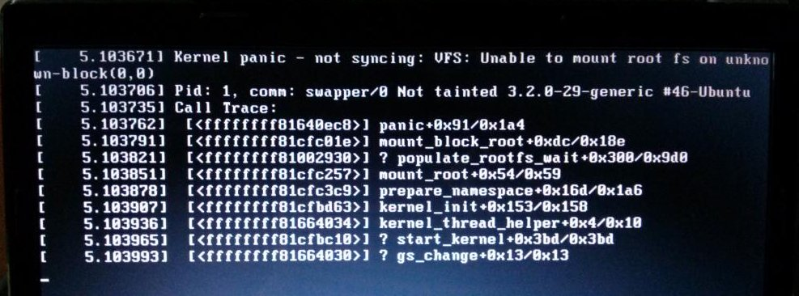
Fallos de hardware (II)
Prevención y recuperación:
Redundancia de la información: utilizar RAID.
Supervisión de registros del sistema (orden
dmesg, datos y pruebas SMART, versmartctl/nvme, ).Recuperación desde copias de seguridad.
Intentar leer bloques para construir una imagen con ‘
dd’.Software de recuperación (TestDisk, PhotoRec...)
Recuperación en entorno estéril: empresa dedicada.
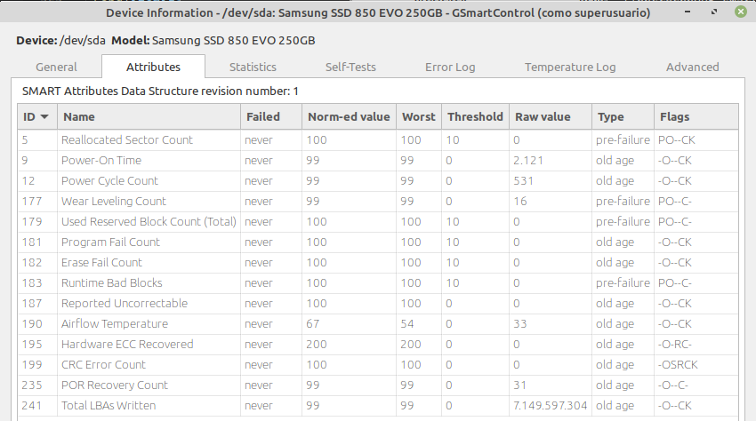
Consejos generales
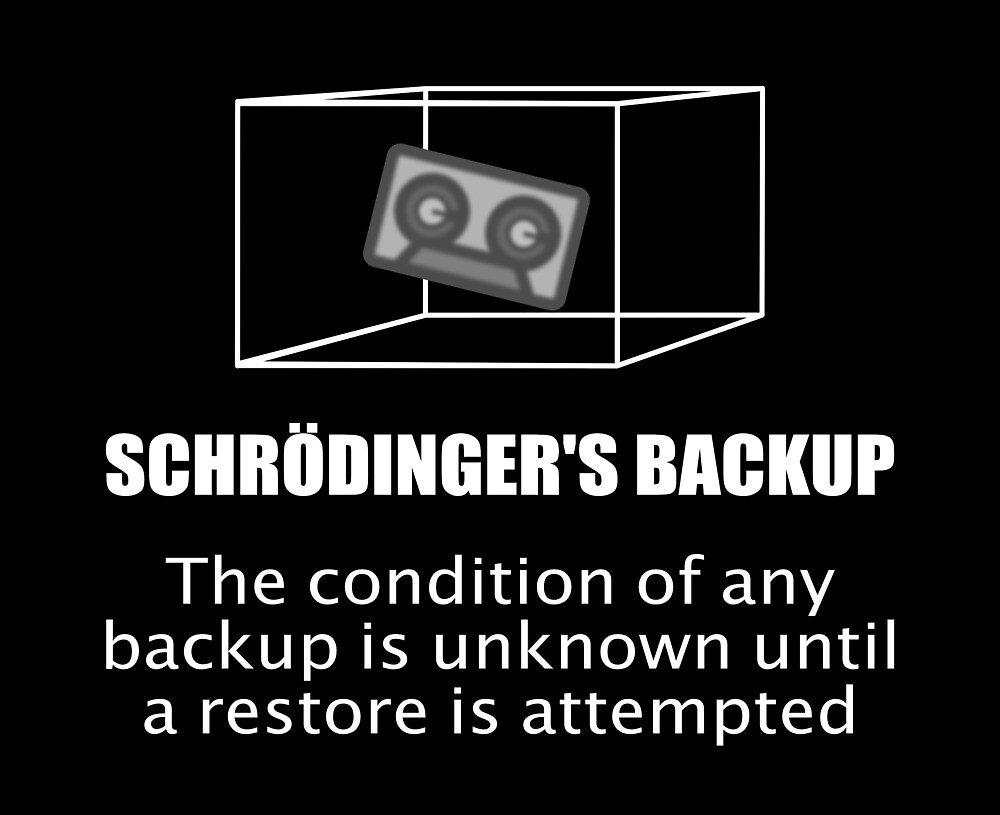
Prevención: Ante cualquiera de los escenarios de pérdida de información debemos tener la capacidad de recuperarnos inmediatamente o en un corto lapso de tiempo.
Una opción es utilizar copias de seguridad.
Consejos generales
Consejos generales para las copias de seguridad:
Etiquetar siempre las copias realizadas.
Elegir correctamente la frecuencia de copias.
Usar particiones distintas para el sistema de ficheros.
Hacer que el backup diario quepa en la unidad.
Llevarse la copia a otro lugar y proteger ese lugar.
Limitar la carga computacional durante el proceso de backup.
No esperar a que ocurra un problema para verificar las copias.
Tener en cuenta el tiempo de vida de los dispositivos.
Prepararse para lo peor.
Factores
Factores a considerar en una estrategia de copias de seguridad:
¿Qué ficheros se deben copiar y dónde están esos ficheros?.
Conocer qué es lo más importante del sistema.
¿Quién hará la copia?
¿el administrador o el propietario de los ficheros?.
¿Dónde, cuándo y bajo qué condiciones se deben hacer?
Mejor hacer las copias cuando no haya usuarios trabajando (por la noche, a la hora de comer...).
Frecuencia de cambios en los ficheros \(\Leftrightarrow\) Frecuencia de las copias.
¿Cada cuánto tiempo habrá que recuperar ficheros dañados o perdidos? (muy difícil saberlo).
¿Dónde se restaurarán los datos?.
Rutinas de restauración sencillas.
Proteger las copias de seguridad contra escritura.
Seguridad de las copias:
Lugar donde se almacenan, condiciones ambientales, propiedades de los medios empleados...
Estrategias: copia de seguridad completa
Se guardan todos los archivos asociados a un ordenador.
La restauración necesita un solo fichero pero mucho tiempo.
Puede ser difícil recuperar un archivo suelto.
Si los ficheros no cambian muy a menudo no tiene sentido.
Si cambian mucho y son vitales para el trabajo de mucha gente: están justificadas incluso a diario.
Hacerla ante grandes cambios: nuevo software, nuevo SO, . . .
Estrategias: copia de seguridad parcial
Se copia sólo algunos archivos específicos (por ejemplo, la carpeta
/etc).Proceso de restauración sencillo, ya que hay menos archivos implicados.
Problema: nos dejamos archivos sin copiar.
Estrategias: copia de seguridad incremental
Solo aquellos ficheros que hayan cambiado desde la última copia.
Se deben realizar casi a diario.
Se mantiene una copia completa del sistema, y se incorporan cambios muy pequeños, de los que se irán haciendo copias incrementales.
Estrategias: niveles de copias incrementales
Copias incrementales organizadas por niveles.
Nivel 0 \(\rightarrow\) Backup completo.
Nivel 1 \(\rightarrow\) Todos los ficheros que han cambiado desde el último backup de nivel 0.
Nivel 2 \(\rightarrow\) Todos los ficheros que han cambiado desde el último backup de nivel 1.
...
Posibilidades de estrategias:
Lunes: nivel 0. Resto de días: nivel 1.
Lunes: nivel 0. Martes: nivel 1. Miércoles: nivel 2. Jueves: nivel 1. Viernes: nivel 2.
También hay que asociar una estrategia de restauración.
Ejercicio: estrategia de backup
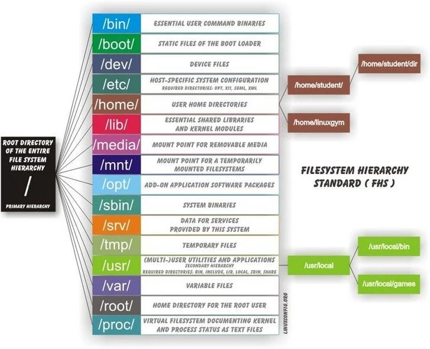
Imagina que tenemos un servidor Linux con una aplicación wordpress:
- guarda los datos de la web en
/var/www/wordpress(cambia a diario) - guarda su base de datos SQL en
/var/lib/mysql(cambia varias veces al día) - guarda su configuración en
/etc/apache2(cambia cada varios días o semanas)
Con la ayuda de la jerarquía estándar de directorios y elige qué debería entrar dentro de la política de copias del sistema operativo y el servicio web.
¿Qué tipo de copia harías para el sistema operativo y para la web?
¿Con qué frecuencia para cada caso?¿Cómo podríamos automatizarlas en Linux?
Soportes para realizar las copias
Guardar la copia de seguridad en el mismo disco (o en otro disco conectado a la máquina) no es seguro.
Multitud de dispositivos:
- Cintas magnéticas (
/dev/st0, normal, o/dev/nst0, non-rewinding, para unidades de cinta SCSI). Mira un ejemplo del MareNostum 5.
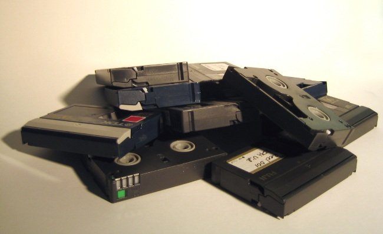
Estantería de cintas o jukeboxes, stackloaders y similares...
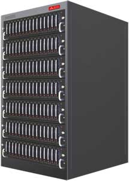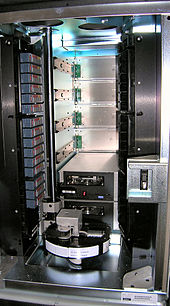
Discos extraíbles (disco duro que puedes extraer sin apagar la máquina).
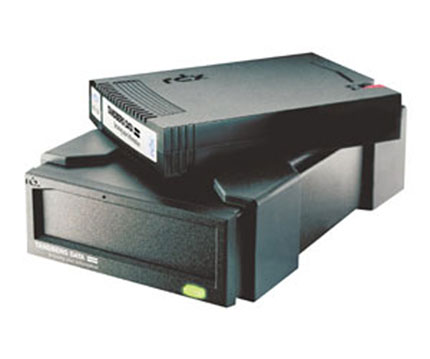
- Cintas magnéticas (
etc.
[Opcional] Criterios para elegir el soporte
Coste: no solo del dispositivo sino también del soporte físico de almacenamiento.
Soporte del kernel para el dispositivo.
Capacidad de almacenamiento de datos de los soportes físicos.
Tasa de transferencia de datos para realizar copias de seguridad.
Mecanismo de cargador automático.
Cuando se llena una cinta se inserta otra automáticamente.
Permite las copias no supervisadas de grandes volúmenes.
Comparativa discos vs cintas
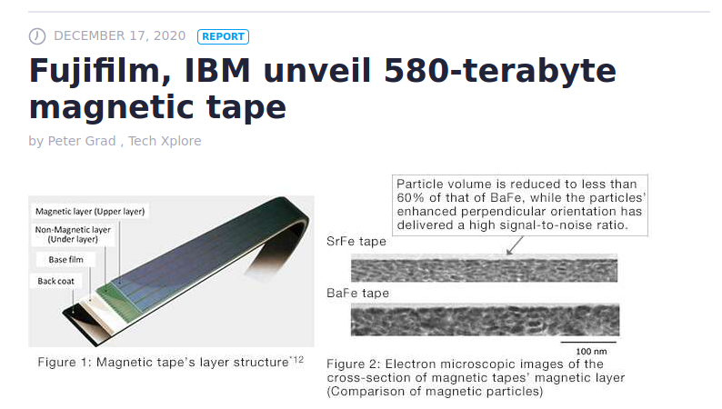
Deventajas: acceso aleatorio lento, necesitan un mantenimiento especial, el tiempo de recuperación es mayor, se duplica mucha información... cuestiones que no afectan a los discos.
Ventajas de las cintas de backup:
Alta capacidad por cinta (580TB).
Dispositivo con menor coste.
Seguridad: las cintas se desconectan al terminar las copias e implementan sistemas para evitar que los datos se sobreescriban lo que impide algunos ciberataques populares como los de ransomware.
Fiabilidad: los discos están permanente conectados y en marcha.
Durabilidad: en promedio pueden durar hasta 30 años.
Velocidad (secuencial): Cinta 800MB/s, HDD 130MB/s, SSD 280MB/s
3 Copias de seguridad y restauración
Comando tar (Tape ARchiver)
Realiza copias de seguridad de ficheros o “dispositivos”.

Fuente: Archivo sobre tar en Wikipedia
TLDR tar
Archiving utility. Often combined with a compression method, such as
gziporbzip2. More information: https://www.gnu.org/software/tar.
- [c]reate an archive and write it to a [f]ile:
tar cf {{path/to/target.tar}} {{path/to/file1 path/to/file2 ...}}
- [c]reate a g[z]ipped archive and write it to a [f]ile:
tar czf {{path/to/target.tar.gz}} {{path/to/file1 path/to/file2 ...}}
- [c]reate a g[z]ipped archive from a directory using relative paths:
tar czf {{path/to/target.tar.gz}} --directory={{path/to/directory}} .
- E[x]tract a (compressed) archive [f]ile into the current directory [v]erbosely:
tar xvf {{path/to/source.tar[.gz|.bz2|.xz]}}
- E[x]tract a (compressed) archive [f]ile into the target directory:
tar xf {{path/to/source.tar[.gz|.bz2|.xz]}} --directory={{path/to/directory}}
- [c]reate a compressed archive and write it to a [f]ile, using the file extension to [a]utomatically determine the compression program:
tar caf {{path/to/target.tar.xz}} {{path/to/file1 path/to/file2 ...}}
- Lis[t] the contents of a tar [f]ile [v]erbosely:
tar tvf {{path/to/source.tar}}
- E[x]tract files matching a pattern from an archive [f]ile:
tar xf {{path/to/source.tar}} --wildcards "{{*.html}}"
[Opcional] Comando tar (Tape ARchiver)
Algunas opciones son:
c\(\rightarrow\) Crea un fichero contenedor.x\(\rightarrow\) Extrae ficheros de un fichero contenedor.v\(\rightarrow\) Modo verbose (mayor cantidad de mensajes).f\(\rightarrow\) Permite especificar el nombre del fichero contenedor.z\(\rightarrow\) Comprime o descomprime mediantegzip.j\(\rightarrow\) Comprime o descomprime mediantebz2.p\(\rightarrow\) Conserva los permisos de los ficheros.P\(\rightarrow\) Guarda los ficheros con su ruta absoluta.N\(\rightarrow\) Considera solo archivos cuya fecha sea superior al argumento.
Comando tar (Tape ARchiver)
tar cPf /dev/nst0 /home\(\Rightarrow\) copia todos los ficheros del directorio/homeen la unidad de cinta.tar czvf /dev/sda1 /home\(\Rightarrow\) ¿qué sucede con la partición/dev/sda1?tar czvf /dev/nst0 /dev/sda1tar czvf practicas.tgz prac_pastar tzvf practicas.tgz\(\Rightarrow\) listar el contenido de la copia de seguridad realizada en el fichero.tar xzvf practicas.tgz\(\Rightarrow\) descomprimir.tar xzvf practicas.tgz prac_aso/boletin1.pdf\(\Rightarrow\) recuperar el ficheroboletin1.pdf(observa que hay que indicar la ruta con la quetarlo almacenó).tar cf practicas.tar -N ’3 days ago’\(\Rightarrow\) copia los ficheros creados/modificados hace menos de 3 días
[Opcional] cpio
Copias de seguridad de conjuntos de ficheros seleccionados arbitrariamente.
Empaqueta los datos en una cinta más eficientemente que
tar(al restaurar es capaz de saltar trozos de la cinta defectuosos).Lee de la entrada estándar el nombre de los ficheros a guardar, para usarlo enlazado con otras órdenes con tuberías.
Algunas opciones:
o\(\rightarrow\) Copiar “fuera” (out) (crear la copia).i\(\rightarrow\) Copiar “dentro” (in) (descomprimir).m\(\rightarrow\) Conserva fecha y hora de los ficheros.t\(\rightarrow\) Muestra la tabla de contenidos, es decir, muestra el contenido de la copia.A\(\rightarrow\) Añade ficheros a un contenedor existente.d\(\rightarrow\) Crear directorios al descomprimir.v\(\rightarrow\) Modo verbose.F\(\rightarrow\) Crear la copia en un fichero. :::
[Opcional] cpio
find /home | cpio -o > /dev/nst0\(\rightarrow\) se copia en la unidad de cinta.find /home | cpio -o -F h.cpio\(\rightarrow\) la copia la realiza en un fichero.cpio -i < h.cpio\(\rightarrow\) restaura la copia de seguridad de ese fichero.cpio -i -F h.cpio fichero\(\rightarrow\) restaura sólo el fichero indicado. :::
Comando dump
Hace copias de seguridad de un sistema de ficheros
Ext2,Ext3oExt4, copiando la partición completa.Permite realizar copias de seguridad por niveles: desde el nivel 0, copia completa, al nivel 9 (que es el valor por defecto).
Actúa solo a nivel de dispositivo.
/etc/dumpdates\(\rightarrow\) información sobre las copias de seguridad de cada SF y de qué nivel son:
/dev/sda1 0 Mon Feb 14 09:56:44 2017 +0100Algunas opciones son:
0-9\(\rightarrow\) Nivel de la copia de seguridad, no requiere argumento.-u\(\rightarrow\) Actualiza/etc/dumpdates, no requiere argumento.-f\(\rightarrow\) Indica fichero destino diferente al usado por defecto, sí requiere argumento. Por defecto, se usa la unidad de cinta.
restore
Restaura copias de seguridad creadas con
dump.Permite recuperar ficheros, directorios y SF enteros.
Se ha de recuperar el más reciente de cada nivel empezando por el 0. ¡Mucho cuidado con las fechas!
Para recuperar SF \(\rightarrow\) crear y montar un SF limpio y vacío, entrar en el punto de montaje y deshacer el backup.
Algunas opciones son:
-r\(\rightarrow\) Restaura la copia completa, no requiere argumento.-f\(\rightarrow\) Indica el dispositivo o archivo donde está el backup, sí requiere argumento.-i\(\rightarrow\) Modo interactivo, no requiere argumento.-x\(\rightarrow\) Extrae los archivos y directorios desde el directorio actual.-t\(\rightarrow\) Imprime los nombres de los archivos de la copia, no requiere argumentos.
Ejemplos de dump y restore
dump 0 -u -f /dev/nst0 /dev/sda1\(\rightarrow\)
Copia de nivel 0 de/dev/sda1en la unidad de cinta, actualizando/etc/dumpdates.dump 1 -u -f /dev/nst0 /dev/sda1\(\rightarrow\)
Copia de nivel 1 de/dev/sda1en la unidad de cinta, actualizando/etc/dumpdates.dump 0 -f jj.dump /dev/sda1\(\rightarrow\)
Copia de nivel 0 de/dev/sda1en el fichero jj.dump.restore -t -f fichero_backup\(\rightarrow\) listado de la copia.restore -x -f fichero_backup practicas/smallsh.c\(\rightarrow\) restaura sólo el ficheropracticas/smallsh.c.restore -r -f /dev/nst0\(\rightarrow\) restaura una copia completa.restore -i -f /dev/nst0\(\rightarrow\) permite restaurar ficheros interactivamente (con ls, cd, pwd, add y extract).
4 Restauración de un sistema completo
Restauración del sistema
Si se tiene una copia de todo el sistema:
Arrancar desde un dispositivo distinto (p.e. un DVD).
Si es necesario, crear los ficheros especiales de dispositivos para los discos (
/dev/sda1, etc.).Preparar el disco duro, e.d., crear las particiones.
Crear el sistema de ficheros en la partición donde se restaurarán los datos y montarlo en un directorio.
Restaurar la copia de seguridad sobre ese sistema de ficheros.
Restaurar la copia más reciente de nivel 0.
Restaurar la copia más reciente del nivel más bajo después del último restaurado.
Si quedan más copias por restaurar, volver al paso anterior.
Desmontar el sistema de ficheros restaurado.
Volver al paso 2, para restaurar otros SF adicionales.
Restauración del sistema
De las siguientes copias realizadas, ¿qué copias de seguridad se restaurarían?:
0 0 0 0 0 0 0.
0 5 5 5 5 5.
0 3 2 5 4 5.
0 9 9 5 9 9 3 9 9 5 9 9.
0 3 5 9 3 5 9.
Restauración del sistema
Solución (restauraciones en negrita):
0 0 0 0 0 0 0.
0 5 5 5 5 5.
0 3 2 5 4 5.
0 9 9 5 9 9 3 9 9 5 9 9.
0 3 5 9 3 5 9.
Ejercicio: diseño completo sistema backup y restauración
Supongamos el ejemplo del servidor web. Podemos simplificarlo sólo a archivos. Utilizando: - tar o dump/restore - el cron de Linux - disco externo local o remoto por ssh
5 Referencias
Referencias
Evi Nemeth, Garth Snyder, Trent R. Hein, Ben Whaley y Dan Mackin. Unix and Linux system administration handbook. Addison-Wesley. 5th Edition. 2018.
https://www.reddit.com/r/sysadmin/wiki/backups/
https://www.tutorialspoint.com/linux_admin/linux_admin_backup_and_recovery.htm
Aeleen Frisch. Essential system administration. Capítulo 11. Backup and restore. O’Reilly and Associates. Tercera edición. 2002.